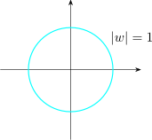
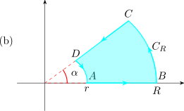

We intend to evaluate convergent improper integrals of the form
\[\int ^{\infty }_{-\infty } f(x)dx\hspace {0.9cm} \text {and}\hspace {0.9cm} \int ^{\infty }_0 g(x)dx\]
provided the function \(g(x)\) can be restricted to a suitable complex function \(f(x)\).
This involves integrating a complex function \(f(z)\) around a closed contour \(\Gamma _R\) bounding a domain \(D\) of the type


The integral is evaluated using either the Cauchy integral theorem or the Cauchy Gaursat, letting \(R\longrightarrow \infty ,\hspace {0.2cm} r\longrightarrow 0\) we
have the improper integrals.
If fig (a), the contour \(\Gamma _R\) to be traversed is the line \(OA\) along the positive \(x-\)axis, the circular arc \(C_R\) is of radius \(R\)
centered at \(z = 0\) ate the vertical line \(BO\).
In fig (b), the contour \(\Gamma _R\) to be traversed is the line \(AB\) along the positive \(x-\)axis the circular arc \(C_R\) from \(B\) to \(C\)
centered at \(z = 0\) with radius \(R\), the \(C_r\) from \(D\) to \(A\) with radius \(r\) centered at \(z = a\).
The construction in (b) is used when the function has a singularity at \(z = a\). This is called indenting the
contour.
The value of the integral of \(f(z)\) around \(\Gamma _R\) determined either by Cauchy Gaursat or \(C-I\) Cauchy integral is
equal to the sum of the segments of \(\Gamma _R\).
For suitable \(f(z)\) the value of the integral along \(C_R\) tends to zero as \(R\longrightarrow \infty \) and if the contour is indented at the
origin, the integral along \(C_r\) as \(r\longrightarrow 0\) can be found straight away.
A fundamental definite integral \[\int ^{\infty }_{-\infty } e^{-1/2\Big (\dfrac {x}{\rho }\Big )^2} dx = \rho \sqrt {2\pi }\hspace {1cm} \Big (\text {Error function}\Big )\] from which we get \[\int ^{\infty }_0e^{-x^2}dx = \dfrac {1}{2}\sqrt {\pi }\]
In preparation to what comes next, we need to prove a simple but useful result - The Jordan
inequality.